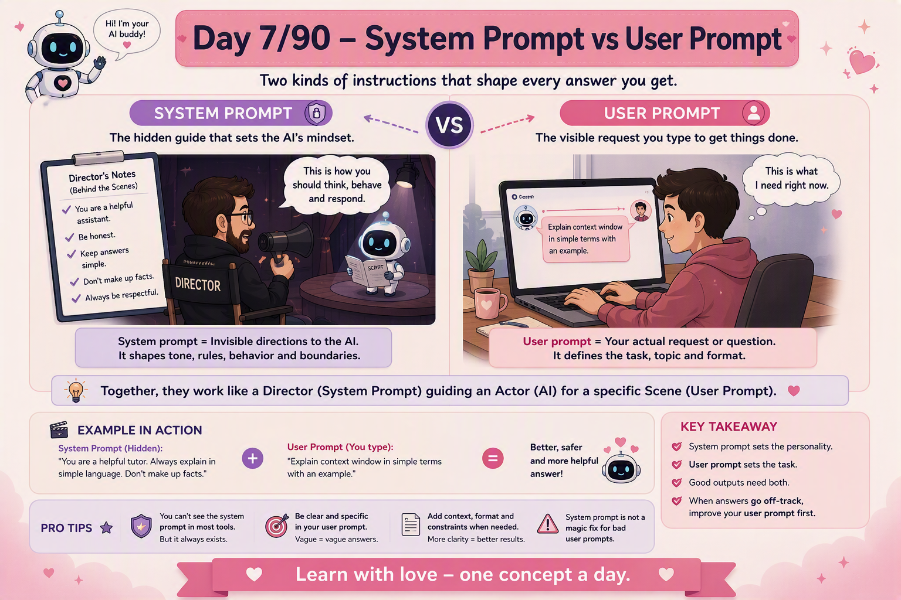

📜 The 30-second brief
A system prompt is the higher-level instruction that defines how the AI should behave: its role, tone, boundaries, safety rules, and output style. A user prompt is the visible instruction or question typed by the user for the current task.
Here is the mindset shift: the user prompt asks for the job; the system prompt defines the working rules. If the user prompt is the scene, the system prompt is the director's note that tells the actor what character to play, what lines never to cross, and what style to maintain.
💌 A fresh analogy: restaurant kitchen rules vs customer order
Imagine a restaurant kitchen. Before any customer walks in, the head chef has rules written on the wall: maintain hygiene, do not use expired ingredients, keep food vegetarian if the kitchen is vegetarian, plate neatly, and speak politely to guests. Those rules are always active in the background.
Then a customer says, "I want a spicy dosa." That is the customer order. The kitchen follows the customer's request, but only within the kitchen rules.
The lesson: the system prompt is the kitchen rulebook. The user prompt is today's order. A good AI answer needs both: stable rules plus a clear request.
⚙️ What actually happens inside a chat
- The app sends the model a stack of messages, not just your latest sentence.
- The system message usually appears first and gives broad instructions about role, behavior, scope, tone, and safety.
- The user message contains the actual task: explain, summarize, write, compare, debug, classify, or answer.
- The model then generates the assistant response while trying to satisfy the higher-level instructions and the current user request.
Important: a system prompt strongly influences behavior, but it is not magic. Good applications still need testing, evaluation, guardrails, retrieval, filtering, and human review for important use cases.
🧩 System prompt vs user prompt at a glance
| Aspect | System Prompt | User Prompt |
|---|---|---|
| Purpose | Sets behavior, role, boundaries, tone, and format rules. | Asks the current question or task. |
| Visibility | Usually hidden from the end user. | Visible and typed by the user. |
| Scope | Applies across the conversation or application. | Applies to the current request. |
| Example | "You are a careful tutor. Explain simply. Do not invent facts." | "Explain context window with an example." |
| Failure mode | Weak rules create inconsistent or unsafe behavior. | Vague asks create vague or wrong outputs. |
💡 Why this matters
- Consistency: system prompts make the assistant behave the same way across many users and many tasks.
- Safety: system prompts define boundaries, refusal behavior, sensitive-data handling, and fallback rules.
- Quality: system prompts can enforce structure, tone, citations, output format, and response style.
- Debugging: when an answer goes wrong, you must ask: was the user prompt unclear, or was the system prompt weak?
- Enterprise use: production AI assistants rely on system prompts to maintain role, scope, and behavior at scale.
🏭 Real-world example: customer support assistant
Suppose a company builds an AI support assistant.
| Layer | Instruction | Effect |
|---|---|---|
| System prompt | "You are a customer support assistant. Be polite. Use only approved policy. If refund rules are unclear, ask the user to contact support. Do not promise refunds." | Keeps the assistant safe, consistent, and aligned with policy. |
| User prompt | "Can I get a refund for my order?" | Defines the specific task the user needs help with. |
| Good response | "I can help check the general refund guidance. Please share the order status. If the policy does not cover this case, contact support." | Helpful, but does not overpromise. |
This is exactly why system prompts matter. Without the hidden rule, the model may try to be helpful by promising something the business cannot honor.
🔒 Things no textbook tells you
- A system prompt is not a security wall. It guides behavior, but users may still try prompt injection. Treat system prompts as one layer, not the whole defense.
- Conflicting instructions reduce quality. If your system prompt says "be concise" but your user prompt asks for "very detailed," the answer may wobble unless the priority is clear.
- Hidden does not mean impossible to infer. Users may guess system behavior by observing outputs, so never put secrets, passwords, or API keys in prompts.
- System prompts age badly. As an AI app grows, old instructions become messy. Treat the system prompt like production code: version, test, review, and refactor it.
- The best system prompts define fallback behavior. "If you do not know, say you do not know" is often more valuable than ten style rules.
⚠️ Common pitfalls & misconceptions
- "System prompt guarantees obedience." No. It influences strongly, but still needs testing and guardrails.
- "User prompt is less important." No. A weak user prompt can still produce a weak answer.
- "Longer system prompt is always better." No. Long, conflicting rules confuse the model and waste context.
- "System prompt should contain secrets." Never. Prompts are not secret vaults.
- "One system prompt fits every use case." No. A tutor, SRE assistant, legal assistant, and customer support bot need different rules.
🎓 Quick self-test
- What does a system prompt do?
It sets high-level behavior, role, tone, boundaries, and formatting rules. - What does a user prompt do?
It gives the current task, question, or instruction. - Which one is usually hidden?
The system prompt. - Can a system prompt fully prevent bad behavior?
No. It is one layer and needs testing, filters, grounding, and human review. - What is the restaurant analogy?
System prompt = kitchen rules. User prompt = customer order. - What should a good system prompt include?
Role, scope, tone, output format, safety boundaries, and fallback behavior.
📚 Key terms to carry forward
- System prompt: high-level instruction that guides model behavior.
- User prompt: user’s task or question.
- Assistant message: the model’s response.
- Instruction hierarchy: the idea that some instructions have higher priority than others.
- Prompt injection: a user attempt to override or manipulate hidden instructions.
- Fallback behavior: what the assistant should do when unsure, unsafe, or out of scope.
⚡ 60-second flashcard
| Define system prompt | Hidden high-level rules that shape role, tone, boundaries, and output style. |
| Define user prompt | The visible ask typed by the user for the current task. |
| Mental model | System prompt = kitchen rules. User prompt = customer order. |
| System prompt controls | Behavior, scope, safety, tone, format, fallback behavior. |
| User prompt controls | Task, topic, input details, desired output for this turn. |
| Best system prompts | Clear, short, testable, non-conflicting, with fallback rules. |
| Big warning | Never store secrets in prompts. |
| Debug question | Was the user unclear, or were the system rules weak? |
| Exam line | System prompt shapes the assistant. User prompt shapes the task. |
| Next topic | Few-shot prompting: teaching AI with examples. |
🖼️ Today's cheat sheet
The same image shared on the LinkedIn post for Note 7.

✨ Next spark
Now that you know the difference between hidden rules and visible requests, the next step is learning how to improve answers by showing examples. Note 8 — Few-Shot Prompting — is where prompting starts to feel like teaching.